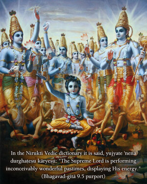
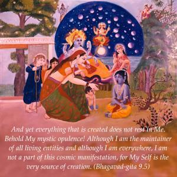

And yet everything that is created does not rest in Me. Behold My mystic opulence! Although I am the maintainer of all living entities and although I am everywhere, I am not a part of this cosmic manifestation, for My Self is the very source of creation.


The Lord says that everything is resting on Him (mat-sthāni sarva-bhūtāni). This should not be misunderstood. The Lord is not directly concerned with the maintenance and sustenance of this material manifestation. Sometimes we see a picture of Atlas holding the globe on his shoulders; he seems to be very tired, holding this great earthly planet. Such an image should not be entertained in connection with Kṛṣṇa’s upholding this created universe. He says that although everything is resting on Him, He is aloof. The planetary systems are floating in space, and this space is the energy of the Supreme Lord. But He is different from space. He is differently situated. Therefore the Lord says, “Although they are situated on My inconceivable energy, as the Supreme Personality of Godhead I am aloof from them.” This is the inconceivable opulence of the Lord.
In the Nirukti Vedic dictionary it is said, yujyate ’nena durghaṭeṣu kāryeṣu: “The Supreme Lord is performing inconceivably wonderful pastimes, displaying His energy.” His person is full of different potent energies, and His determination is itself actual fact. In this way the Personality of Godhead is to be understood. We may think of doing something, but there are so many impediments, and sometimes it is not possible to do as we like. But when Kṛṣṇa wants to do something, simply by His willing, everything is performed so perfectly that one cannot imagine how it is being done. The Lord explains this fact: although He is the maintainer and sustainer of the entire material manifestation, He does not touch this material manifestation. Simply by His supreme will, everything is created, everything is sustained, everything is maintained and everything is annihilated. There is no difference between His mind and Himself (as there is a difference between ourselves and our present material mind) because He is absolute spirit. Simultaneously the Lord is present in everything; yet the common man cannot understand how He is also present personally. He is different from this material manifestation, yet everything is resting on Him. This is explained here as yogam aiśvaram, the mystic power of the Supreme Personality of Godhead.